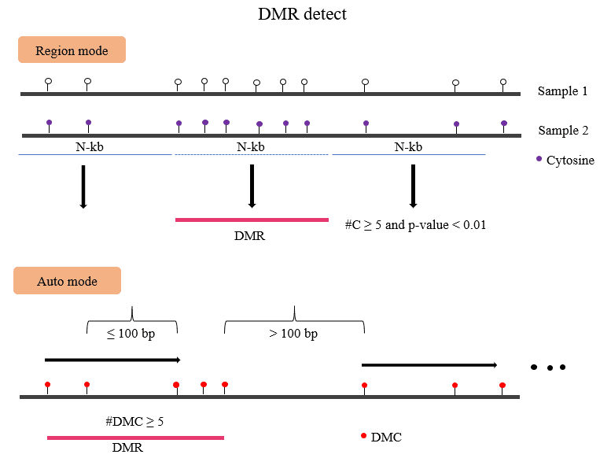

DiffMeth
DMC or DMR/DMG
DMtools dmDMR integrates several commonly used methods for detecting differentially
methylated Cytosines (DMCs) and DMR base on DM format,
for example, the beta-binomial distribution model for data with replicates and
Fisher’s exact test for data without replicates.
In addition, DMtools can not only scan the whole genome for DMRs but also operate
on predefined windows, such as gene bodies,
transposable elements (TEs), untranslated regions (UTRs), and CpG islands.
For each sliding window or predefined window, differential analysis can be performed if it meets the following criteria: 1 the region contains at least m valid CpG (or non-CpG) sites (e.g., m = 5) in both samples; 2 each valid CpG site is covered by at least n bisulfite sequencing reads (e.g., n = 5). Users can choose a suitable statistical method to perform hypothesis tests. Each predefined window or sliding window acquires one p value from the selected statistical testing method. Finally, the p values are adjusted with the false discovery rate (FDR) method for multiple hypothesis testing, proposed by Benjamini and Hochberg. If the adjusted p value of DMCs is less than the predefined threshold, the number of DMCs in the window is greater than the preset threshold, and the difference of DNA ML between the two samples is greater than the preset threshold, the window is defined as a DMR.
{kind=link}
You can get dmc and dmr result with:
Usage
$ dmDMR -p mutant.output.dm \
-1 mutant.methratio.dm -2 WT.methratio.dm \
--methdiff 0.2 --minstep 100 --mindmc 5 --pval 0.01
obtained hyper、hypo dmc/dmr from dmc/dmr results
$ awk -v OFS="\t" 'gsub(/\,/,"\t",$NF)' mutant.output.dmr | \
awk '$(NF-2)>4 && $NF<=1' > mutant.output.hyper.dmr
$ awk -v OFS="\t" 'gsub(/\,/,"\t",$NF)' mutant.output.dmr | \
awk '!($(NF-2)>4 && $NF<=1)' > mutant.output.hypo.dmr
$ awk '$NF>0' mutant.output.dmc | awk '{print $1"\t"$2"\t"$2}' \
> mutant.output.hyper.dmc
$ awk '$NF<0' mutant.output.dmc | awk '{print $1"\t"$2"\t"$2}' \
> mutant.output.hypo.dmc
Parameters
[ Main paramaters ] |
|
|---|---|
-p |
output file prefix |
-1 |
sample1 methy dm files, sperate by comma. |
-2 |
sample2 methy dm files, sperate by comma. |
--mindmc |
min dmc sites in dmr region. [default : 4] |
--minstep |
min step in bp [default : 100] |
--maxdis |
max length of dmr [default : 0] |
--pvalue |
pvalue cutoff, default: 0.01 |
--FDR |
adjust pvalue cutoff default : 1.0 |
--methdiff |
the cutoff of methylation differention. default: 0.25 [CpG] |
--element |
caculate predefinded region, input file with id. |
--context |
Context for DM. CG/CHG/CHH/C, [C] |
-h|--help |
|
Auto define DMR region according the dmc
dmDMR -p dm.output -1 [sample1.methC.dm,replicates ..] \
-2 [sample2.methC.dm,replicates ..]
Pre-definded regions (Gene/TE/UTR/CDS or other regions, not suggest)
dmDMR -L -o_dm dm.output -1 [sample1.methC.dm,replicates ..] \
-2 [sample2.methC.dm,replicates ..]
Output file
DMC
# format
Chrom position starnd context pvalue adjust_pvalue combine_pvalue corrected_pvalue \
cover_sample1 meth_sample1 cover_sample2 cover_sample2 meth.diff
DMR
# format
Chrom start end methlevelInSample1 methlevelInSample2 NdmcInRegion hypermdc,hypodmc
Tip
For feature requests or bug reports please open an issue on github.